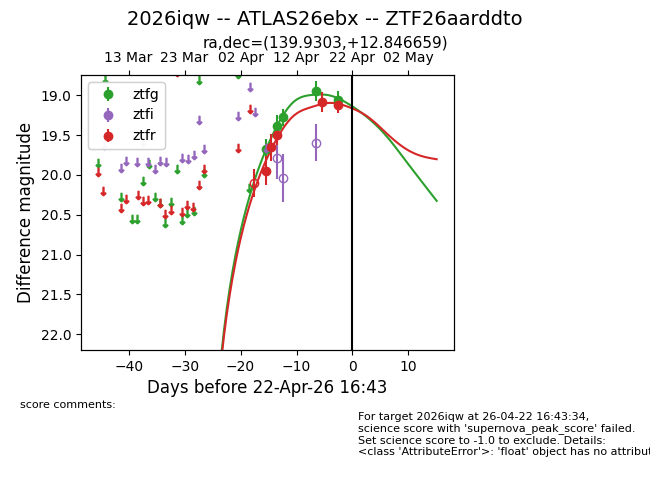
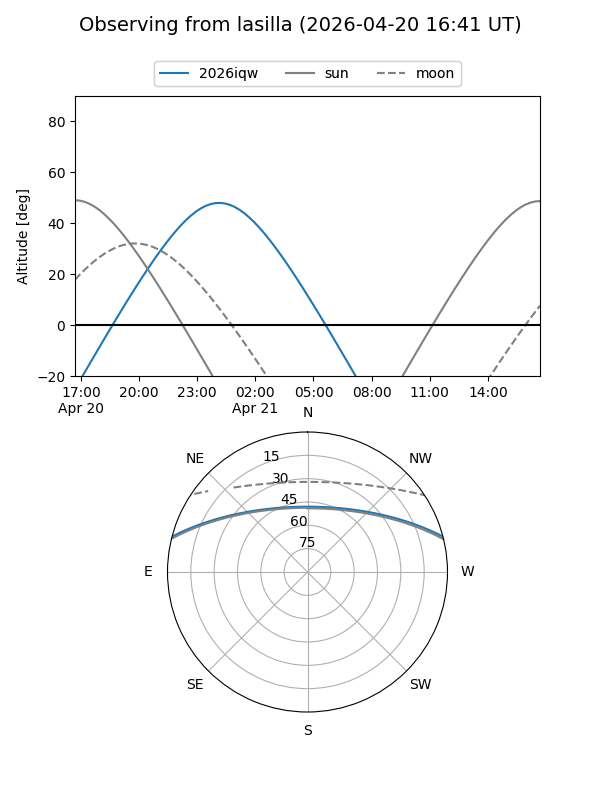
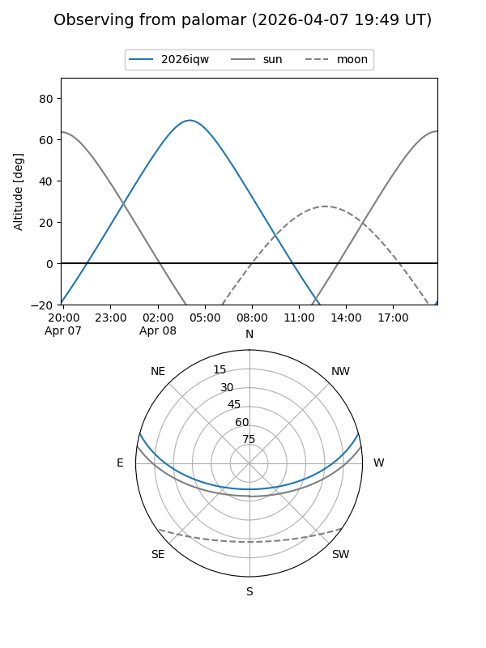
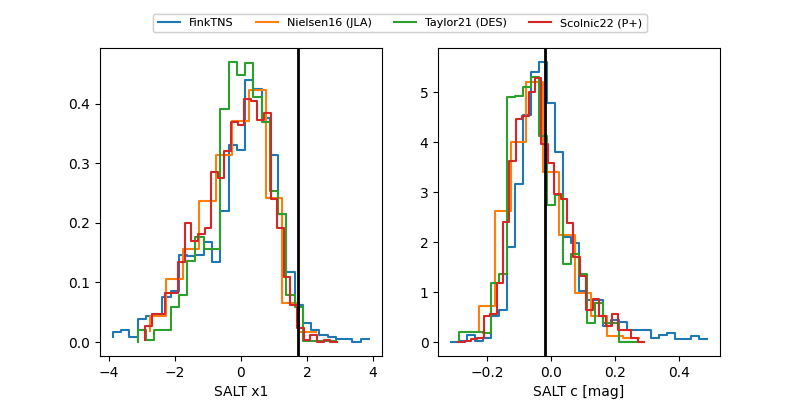

2026iqw
Target 2026iqw at 2026-04-22 16:47
Aliases and brokers:
FINK: link
Lasair: link
ALeRCE: link
TNS: link
YSE: link
alt names
ZTF26aarddto (ztf,fink_ztf)
2026iqw (tns,yse)
ATLAS26ebx (atlas)
Coordinates:
equatorial (ra, dec) = 139.9303,+12.84666
equatorial (HMS+DMS) = 09:19:43.26,+12:50:47.97
galactic (l, b) = (218.0814,+38.64121)
Flags:
Photometry:
last ztfg=19.06, ztfr=19.12
5 ztfg, 5 ztfr detections
Lightcurve

Visibility


Additional plots
